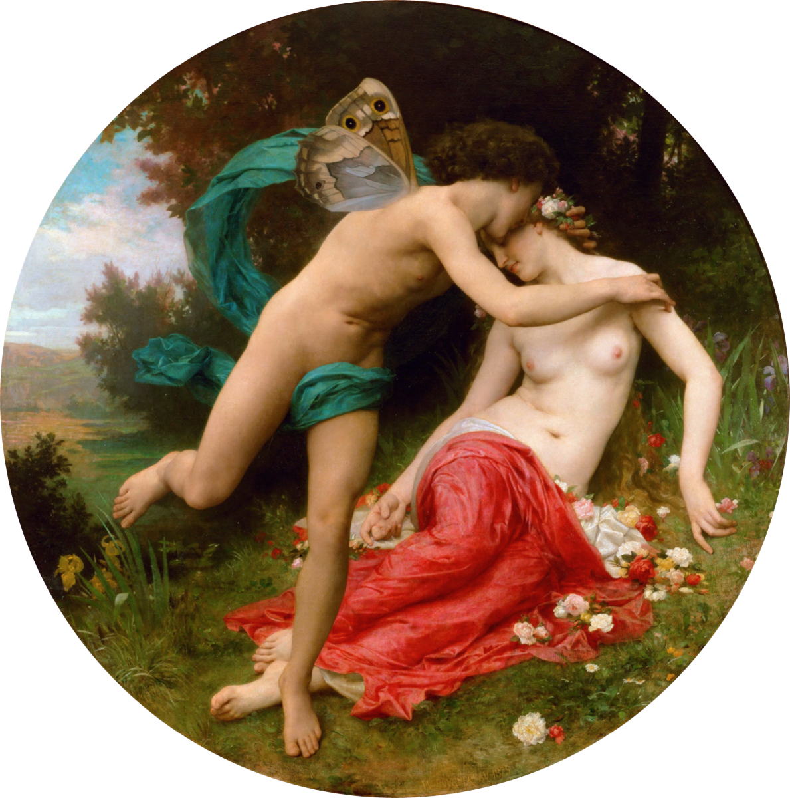

В стародавние времена, когда боги ещё ступали по земле, жила дивная нимфа. Её нарекали по-разному — Расцветающей, Владычицей красок, Той, из коей произрастает сущее. Но имя, дарованное ей богами, означало просто: Жизнь в цветах.
Она была юна, нежна и воплощала саму красоту весны. Но обитала в уединении, сокрытая от мира в облаках и туманах, в том краю, где рождаются ветры и где время течёт иначе.
Однажды, когда земля ещё дремала под снегом и стужей, явился юноша. Его величали Дыханием, Лобзанием рассвета, Тем, что пробуждает. Он был молод и прекрасен, его дуновение несло тепло и жизнь. Этот дух летал над холодными полями и зрел красоту природы, дремлющей подо льдом, — красоту, которую лишь он один умел распознать.
Но когда юноша встретил нимфу, сердце его затрепетало. Он увидел в её очах отражение всех цветов, что когда-либо расцветали, всех соцветий, что ещё расцветут. Молодой дух полюбил без памяти.
Он похитил её, унеся в свои облачные объятия. Нимфа поначалу противилась — золотые власы её развевались, как стяг восстания, крик звучал подобно раскату грома. Но мало-помалу, внимая его речам, она ощутила искренность его чувств.
Юноша поведал ей обо всём, что видел на свете. О дремлющей природе, что алчет пробуждения. О семенах, готовых прорасти, но ждущих знамения. О птицах, летящих из дальних краёв в поисках гнезда. О том, как земля стонет подо льдом, взывая к тому, кто разбудит её.
«Лишь ты способна свершить сие, — говорил он. — Лишь твоя краса, лишь твоя мощь в силах пробудить спящий мир».
Нимфа была тронута его словами и его любовью. Она согласилась сойти на землю. Она согласилась стать его спутницей в великом деянии пробуждения.
И тогда свершилось чудо.
Куда бы она ни ступала, вырастали цветы. Первые — робкие, нежные, как младенцы. Затем — всё более дерзкие, всё более яркие. Всюду, куда веял юноша, его теплынь пробуждала жизнь, таившуюся в корнях и семенах.
Вместе они кружили над полями и лесами. Их танец был древним, священным, полным волшебства. Снег таял — не просто таял, а пел, таял со слезами ликования. Земля зеленела, словно приходила в чувство после долгого забытья.
Бабочки и пчёлы появлялись из ниоткуда, будто рождаясь из самого воздуха. Птицы затягивали гимны весне — каждая своим голосом, но все вместе слагая симфонию возвращения.
Люди на тверди взирали в небо и возглашали: «Вот она, весна! Вот она, жизнь! Вот она пришла!»
Юноша одарил нимфу бесценным даром — вечной юностью. Но то была не молодость тела, а юность духа, способность вечно дивиться миру, вечно радоваться прелести сущего.
Он наделил её и властью над всеми цветами земли. Не властью повелительницы, а властью любящей матери, что знает каждый цветок по имени, что помогает ему расцветать, что скорбит, когда он вянет.
С того дня нимфа стала королевой весны, владычицей пробуждения, царицей того мгновения, когда жизнь взрывается из мёртвого сна. А юноша сделался её верным спутником, её дуновением, её лобзанием — год за годом.
Каждый год, когда стужа начинает отступать и в воздухе чувствуется первое тепло, боги повторяют этот танец.
Юноша веет мягким ветром, и нимфа пробуждается. Вежды её раскрываются медленно, как лепестки цветка, раскрывающегося навстречу солнцу. Они кружат вместе — он с его незримой нежностью, она с её зримой красотой. И твердь ликует.
И на земле вновь начинается весна — пора любви, обновления и чудес. Пора, когда всякий, кто взирает на первый цветок, пробивающийся сквозь снег, в это мгновение постигает смысл бытия.
Что любовь способна пробудить мир от мёртвого сна.
Что нежность сильнее стужи, что поцелуй теплее льда.
Что краса не вечна в смысле бесконечности, но вечна в смысле неизменного возвращения.
Что после каждой зимы приходит весна, и всякий раз это чудо, всякий раз это новое рождение.
Что верность существует не в отсутствии разлуки, а в способности вернуться, в обете, что ты придёшь вновь.
Что наш удел — пробуждаться каждый день, каждый год, в каждый миг жизни и созидать прелесть.